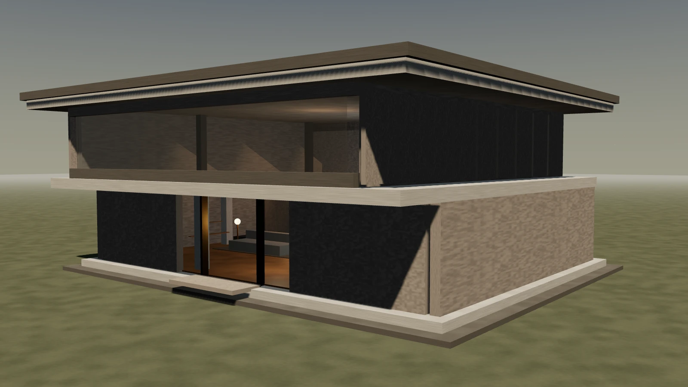
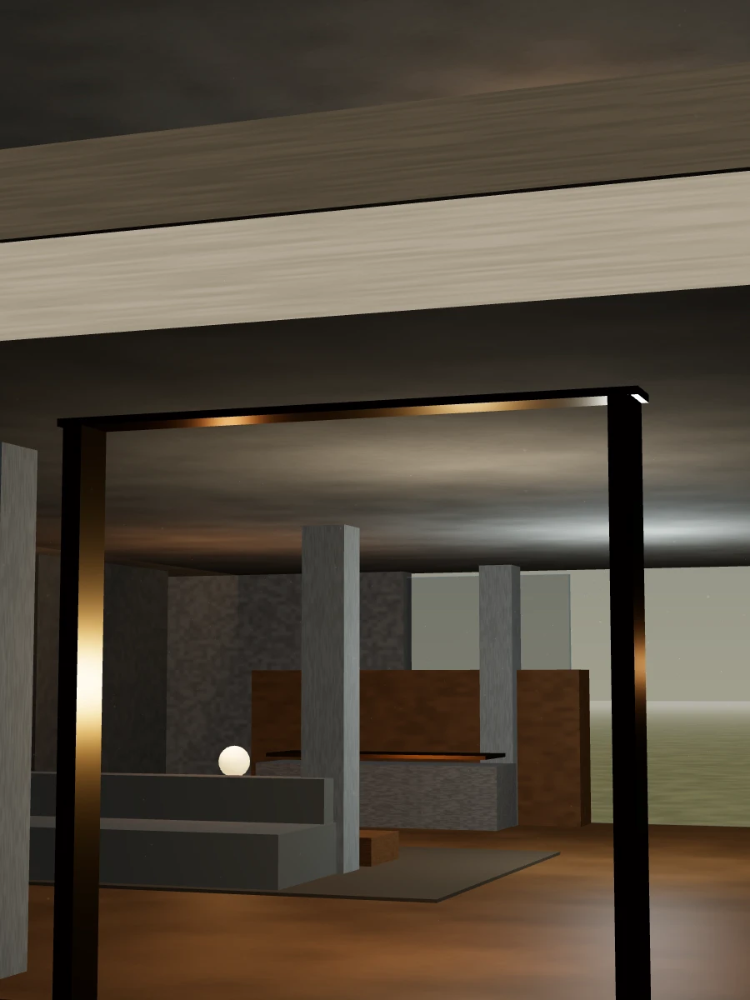
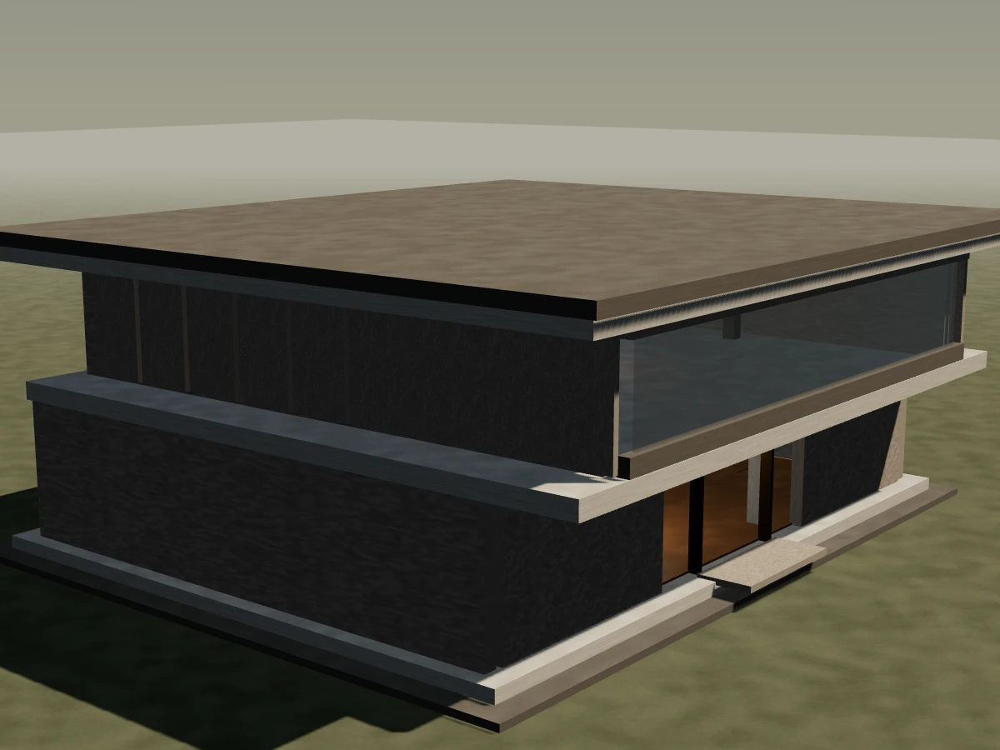
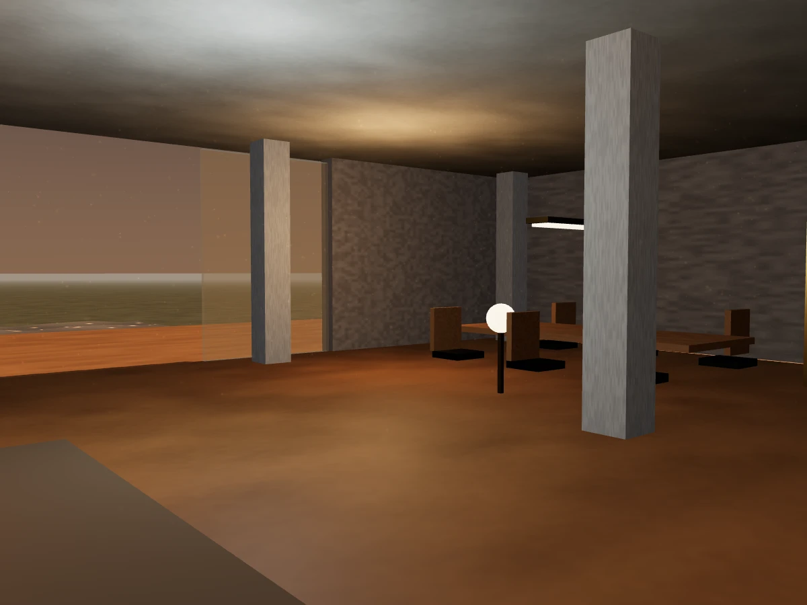
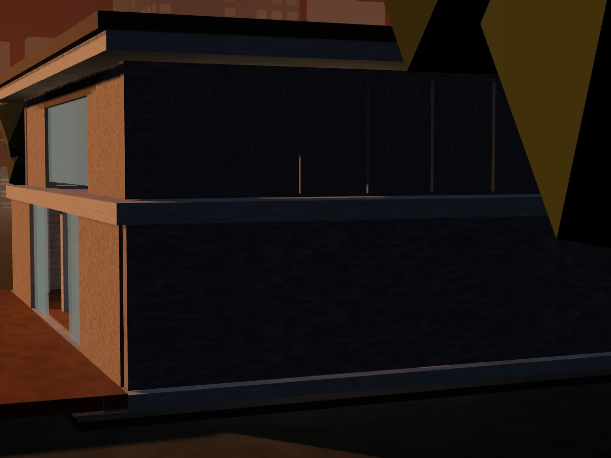
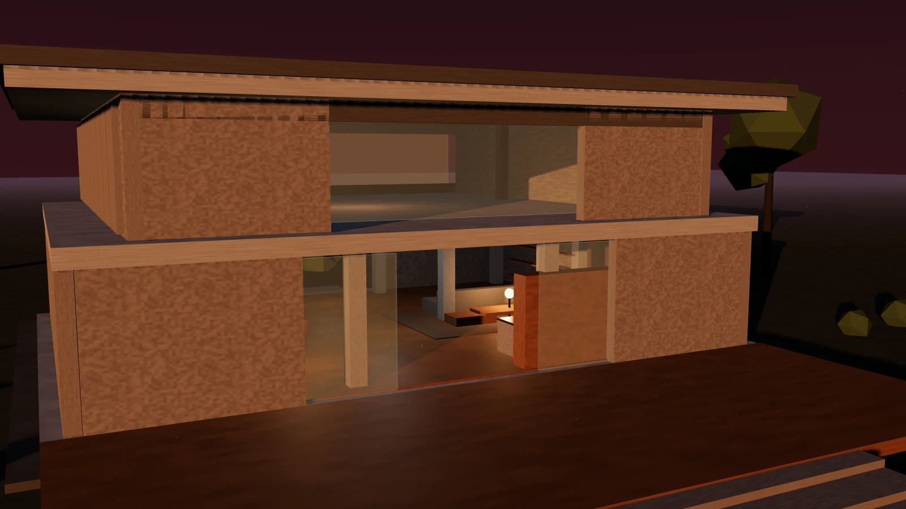
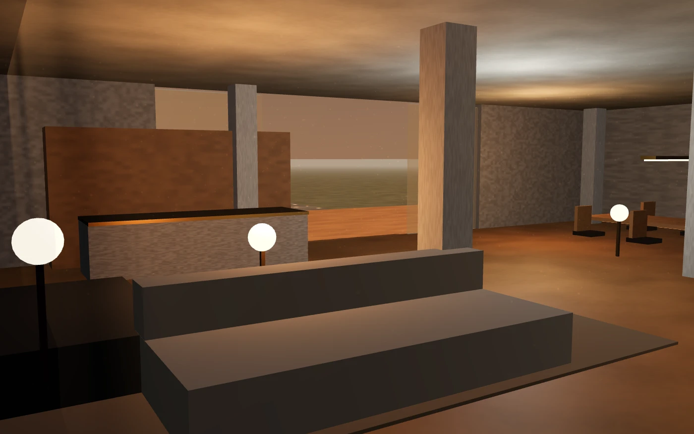

2024Cedarstone Architecture Group · Est. 2009 · Johannesburg
We draw in stone, light and restraint.
An architecture practice for people who intend to stay. Houses, workplaces and public rooms built to outlive their photographs.
Scroll — the house is built as you go
01 — Practice
A building is a promise you can walk into.
Cedarstone was founded on a single conviction: architecture is not decoration applied to shelter, it is the shelter itself, made deliberate.
We work slowly at the start so the site can work quickly at the end. Sixteen years, two hundred and forty completed buildings, and not one of them designed in a hurry. Every commission begins the same way — on the land, in silence, with a tape measure and no preconceptions.
2009Founded
0Buildings delivered
0SAIA regional awards
0Clients who return
02 — Method
Four movements, no improvisation.
The same sequence on every project, whether it is a garden room or forty thousand square metres.
01
Enquiry
We measure the site, the light, the budget and the family. Two weeks. Nothing is drawn yet — the first drawing is always premature.
02
Concept
One idea, argued properly. Massing, section, and the single move the building is about. If it cannot be explained in one sentence, it is not ready.
03
Documentation
Every joint resolved on paper before it is resolved in concrete. Council submission, engineers, heritage consent, tender.
04
Delivery
We stay on site until the last handle. Architecture is a verb until handover — and we are the ones holding the snag list.
03 — Material
We specifywhat ages well.
Off-shutter concrete, hand-laid stone, unlacquered brass, oiled oak, low-iron glass. Materials that record time instead of resisting it. Every palette is assembled on site, in the light it will live in, before a single sheet is issued.
04 — Threshold
The door is the whole argument.
Compression, then release. A low, dark entry so the room beyond can open. Everything we know about a building is decided in the three metres before you are inside it.
“Cedarstone gave us a house we walk through differently in every season.”
H. Mokoena · Westcliff Residence
05 — Selected work
Six buildings,one attitude.
A private house in Westcliff, a mixed-use block in Rosebank, a chapel of two hundred square metres. Different briefs, same insistence on the section.

2023
2025
2022
2021
202606 — Studio
Fourteen people,one drawing board.
We keep the practice small enough that the person who drew your section is the person standing on your site. Directors take every project from first sketch to final snag — there is no hand-off, because there is no one to hand off to.

What we do
Residential architectureNew build · alteration
Commercial & mixed-useWorkplace · retail
Interior architectureJoinery · lighting
Heritage & adaptive reuseSection 34 · consent
Planning & council approvalsRezoning · SDP
Visualisation & VR walkthroughsPre-construction
Recognition
SAIA Award of Merit 2024 · Corobrik Regional Award 2023 · AZA Emerging Practice 2019 · Nine regional citations since 2015.
07 — Rear elevation
The side no onephotographs.
A building is judged from the street and lived from the garden.
We give the back of the house the same attention as the front — the same stone, the same joint spacing, the same care with the roof line — because that is the elevation you will actually look at, every evening, for the rest of your life. It is where the doors open, where the light lands last, and where the building finally stops performing.
Turn around. You are standing behind the house you just built.
08 — Enquiries
Bring us the site.We will bringthe argument.
New commissions open for 2027. Tell us where the land is and what you would like to be true about the mornings.
Studiostudio@cedarstonearchitecture.co.za
Telephone+27 82 061 3598
Address14 Sherborne Road, Parktown, Johannesburg, 2193
HoursMonday to Thursday, 08:00 – 17:00